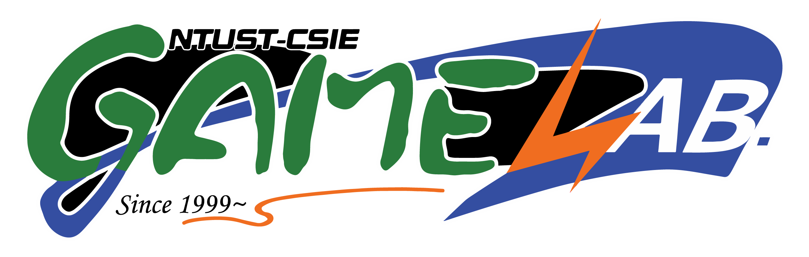

Timeline
Jan 2025 -
Research Assistant
Academia Sinica
Network Research Lab, Institute of Information Science
Taipei, Taiwan
Jul 2023 – Jun 2024
Research Assistant Intern
Academia Sinica
Network Research Lab, Institute of Information Science
Taipei, Taiwan
May 2022 – Feb 2024

Undergraduate Research Fellow
GameLab, NTUST
Sep 2021 – Jun 2025

NTUST: B.S.
Department of Computer Science and Information Engineering
Conference
|
|
Can AI Outsmart Firewall Errors? a Study on LLMs for Anomaly Generation and Detection
Chang-Sheng Lee,
Ling-Jyh Chen
IEEE DSC, 2025
paper
This study revealed the strengths and limitations of LLMs in firewall anomaly detection. We evaluated four state-of-the-art Large Language Models on two tasks: generating and detecting anomalies in firewall rules. The experimental results indicate that while advanced models show potential for detecting firewall rule anomalies, they lack the precision and consistency required for complex firewall management without additional fine-tuning.
|
|
Open Source Project
|
|
TWC_Mesh: Together We Connect Mesh
cclljj,
Sean,
Chang-Sheng Lee,
Jia-Huang Weng
project page
TWC_Mesh provides resilient wireless mesh networking for disaster scenarios, enabling long-distance, low-power communication and high-bandwidth connectivity without relying on existing infrastructure. The system is built on ESP32 development boards running Meshtastic, which is based on LoRa, and integrates with ATAK to deliver geospatial information and real-time collaboration capabilities.
|
|
Capstone Project
|
|
Spine2D Skeleton Auto-Generation
Yu-Che Lee*,
Chang-Sheng Lee*
Awarded by National Science and Technology Council(NSTC), Taiwan
NSTC project id: 113-2813-C-011-056-E
Spine2D Skeleton Auto-Generation achieves practical and editable facial animation from static images by integrating landmark detection, image completion, and motion retargeting into a unified pipeline. The system demonstrates robust deformation and animation quality across diverse inputs, exporting directly to Spine2D’s editable format without requiring manual rigging, significantly reducing production overhead while enhancing creative efficiency and generalization for 2D animation workflows.
|
|
Industry-Academic Cooperation Project
- Sep 2023 – Feb 2024: IGS (International Games System) – Hong Kong Mahjong AI Bot Development
- Oct 2022 – Aug 2023: IGS (International Games System) – Japanese Mahjong Game Development
- Jul 2022 – Dec 2022: Consumers' Foundation Chinese Taipei – Gacha Game Probability Verification
- May 2022 – Jun 2022: IGS (International Games System) – Xue Liu Hong Zhong Mahjong Game Development
|
|